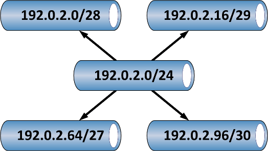

-
 CORPORATE INFO
CORPORATE INFO -
 OUR SERVICES
OUR SERVICES -
 STAY CONNECTED
STAY CONNECTED -
 CONTACT INFO
CONTACT INFO- E-mail:
Contact Us page - Telephone:
+1 972 863 CORE - Address:
3136 Round Tree Ln
Frisco, TX 75034-4589
- E-mail:
IP Subnetting Part 1 - IPv4
Despite the large number of jokes in high school about never needing to use mathematics after graduation, the art form known as IP Subnetting requires a solid grasp of math based on binary numbers (0, 1). In this first part of my devoted attention on IP Subnetting, we'll focus on Internet Protocol version 4 (IPv4) addressing, some history, and the methods available to make IPv4 addressing go farther.
IPv4 Addressing
To facilitate communication between hosts on different data link networks, logical addressing using IPv4 provides 32 bits which can uniquely address a system. Each IPv4 address has two components: network and host. While these two components can be written separately, they are normally written together in dotted decimal notation, which presents the single 32-bit number as four 8-bit numbers in decimal form separated by periods (or dots in network parlence). For example, the host represented by 3221226157 is actually written in IPv4 dotted decimal notation as 192.0.2.173. The problem becomes extracting the network and host components from this IPv4 address.
Binary Math Saves the Day
To provide a way to separate the two components of an IPv4 address, binary addition is applied to combine the IPv4 address with a subnet mask. Subnet masks signify which bits in the address represent the network component. Fortunately, subnet masks fall along a linear pattern, which prevents subnet masks from looking like most IPv4 addresses. Starting with the left most bit in a 32-bit number, setting the number of bits for the network component to 1 will leave a subnet mask in dotted decimal notation, though it will only be composed on decimal numbers from [0, 128, 192, 224, 240, 248, 252, 254, 255]. These number represent the linear growth of each byte in a subnet mask:
00000000 = 0 10000000 = 128 11000000 = 192 11100000 = 224 11110000 = 240 11111000 = 248 11111100 = 252 11111110 = 254 11111111 = 255
To extract the network component, the subnet mask is added to the IPv4 address as illustrated below. Remember that, in binary math, only three outcomes are possible (0 + 0 = 0; 0 + 1 = 0; 1 + 1 = 1):
11000000 00000000 00000010 10101101 (192.0.2.173) + 11111111 11111111 11111111 00000000 (255.255.255.0) ----------------------------------- = 11000000 00000000 00000010 00000000 (192.0.2.0)
While we know can clearly see the network component, we should also see the host component as well which is 0.0.0.173 (though some subnet masks can make this harder). As it turns out, the real importance is to determine the network component, as this indicates to the local system whether a peer system is on the same network segment or a remote one. This determination of peer system proximity defines the essence of IPv4-based communication across a large internetwork (and applies to IPv6 as well, though that's a topic for a later date). Now, let's cover some history before we get to the practical application of IPv4 subnetting.
History of IPv4 Addressing
Without diverting into a discussion of the entire IP suite of protocols, IP was really a by-product of the development proposal of Transmission Control Protocol (TCP) by Vint Cerf and Bob Kahn in a research paper in 1974. The actual implementation of IP was not specified in the paper, but was developed over the next several years through versions that never really saw the light of day (version 0-3). IPv4, as we know it, was formally penned as RFC 760 in January 1980, only to be superceded by RFC 791 in September 1981. It is in section 3.2 of RFC 791 that all the real trouble with IPv4 begins.
Classful Addressing
The specification in RFC 791 broke the 32-bit address space into four distinct address areas:
- Class A (first bit = 1 - 7 bits of net, 24 bits of host), provides for 128 networks with 16777216 hosts each
- Class B (first bits = 11 - 14 bits of net, 16 bits of host), provides for 16384 networks with 65536 hosts each
- Class C (first bits = 111 - 21 bits of net, 8 bits of host), provides for 2097152 networks with 256 hosts each
- No class name (only labeled "escape to extended addressing mode")
These four areas provided the foundation of the Internet as we know it. And the numbers, at the time, seemed like an enormous amount of addresses allocated to computer networks. It's all the more telling that, today, the allocations of IPv4 are running so thin. These class specifications were eventually updated in RFC 1166 to break the remaining address space into two additional sections (Class D - Multicast and Class E - Reserved). A good reference exists in RFC 1166 around the bits which signify each class and what remaining bits are allocated for network and host addressing. The chief problem with the classful allocations (as detailed in RFC 1517) is the lack of scalability to more than 2113664 networks. These allocations only defined subnet masks on octet boundaries, which really presented a problem for medium-sized networks. By the early 1990s, the IETF was well aware of the proliferation of networks and the inefficiencies of the classful allocation scheme. A plan was devised to introduce additional scalability to IPv4 address allocation.
Classless Inter-Domain Routing (CIDR)
To solve the scalability problem presented by the growth of the Internet, the IETF proposed a classless scheme of address allocation, which permited subnet masks to be defined on any boundary required. By using subnet masks of varying length, administrators could address network as needed without wasting address space needlessly. As such, the concept is known as Variable Length Subnet Mask (VLSM) and is the central mechanism behind the CIDR scheme. VLSM operates in two directions. Normally, those directions would be left and right (especially based on the earlier subnet mask discussion), but are instead referred to as supernetting and subnetting. The concept of subnetting has two uses: the first (as noted in the title) tends to be a synonym for classful and classless addressing schemes, while the second is the division of large address blocks into multiple, smaller address blocks for easier application to address networks. Supernetting, as the opposite VLSM direction of subnetting, combines multiple, smaller (and contiguous) address blocks into large address blocks. Both directions are needed to make CIDR work in computer networks.
Application of CIDR and VLSM
To make the use of VLSM effective, let's take examples of subnetting and supernetting separately. Engineering a network will provide many opportunities to combine both concepts, as best practices dictate the use of both. For our examples, I'll stick with the range provided for documentation (192.0.2.0-192.0.2.255, known as TEST-NET) in RFC 3330. Before we being subnetting and supernetting, let's lay some ground rules that come along with the use of VLSM:
VLSM Basics
One concept to remember in the use of VLSM is the reservation of certain addresses in a subnet. The first address is reserved to represent the network itself. Most devices will not let you use the network address for a host (though, as usual, exceptions exist). The last address is also reserved to represent all hosts on the network (i.e. an IP broadcast). These rules help define a formula for determining the number of hosts on a given subnet, based on the number of bits allocated for hosts. The formula is represented as:
Host Bits = 2n-2
So, in a typical 24-bit network, only 8 bits remain for hosts. These 8 bits provide 254 available host addresses (28 - 2 = 254). A second concept to remember is number of bits allocated for hosts vs. networks can vary throughout an internetwork. This is the central concept of VLSM application, as each network should be fit to a network size to accommodate the current number of hosts (and best practices dictate that we provide room for growth as well). Or, as Ben Franklin would say, "Waste not, want not". A third VLSM concept concerns subnet mask notation. To simplify the writing of subnet masks with a network address, the prefix notation (/24) indicates the number of bits allocated for the network component of the mask. So, instead of writing 192.0.2.0/255.255.255.0, we can instead write 192.0.2.0/24. The use of prefix notation is quite prolific, so expect to see it often.
Subnetting IPv4
So, given a small enterprise with 13 offices, each with less than 10 hosts, how can we subnet the single 192.0.2.0/24 allocation for use at all these sites? First, we know from the number of sites and hosts that we have more addresses than we need (13 x 10 = 130; 130 < 254). So, the real task is to divide the allocation into enough subnetworks to accommodate the number of sites. One could focus on the calculcation based on the number of hosts, but I prefer to focus on the number of sites instead. By this, I mean that we determine what the smallest number of subnetworks we can produce will be to still meet the required number of sites. If that calculation does not support the number of hosts at each site, the calculations will get more complicated. Our example is simple enough to illustrate the point for now, though. The network boundary of subnets will fall along binary lines (powers of 2). With the need for 13 offices, 16 subnets is our minimum requirement. This step takes four bits for the network and leaves four bits for hosts:
11000000 00000000 00000010 00000000 (192.0.2.0) + 11111111 11111111 11111111 11110000 (255.255.255.240) ----------------------------------- = 11000000 00000000 00000010 00000000 (192.0.2.0)
I emphasized the additional four bits in the subnet mask, which is now 255.255.255.240 (or /28). Each host on the new subnets will use this mask. The list of subnets this produces from 192.0.2.0/24 appears as:
- Subnet 1 - 192.0.2.0/28
- Subnet 2 - 192.0.2.16/28
- Subnet 3 - 192.0.2.32/28
- Subnet 4 - 192.0.2.48/28
- Subnet 5 - 192.0.2.64/28
- Subnet 6 - 192.0.2.80/28
- Subnet 7 - 192.0.2.96/28
- Subnet 8 - 192.0.2.112/28
- Subnet 9 - 192.0.2.128/28
- Subnet 10 - 192.0.2.144/28
- Subnet 11 - 192.0.2.160/28
- Subnet 12 - 192.0.2.176/28
- Subnet 13 - 192.0.2.192/28
- Subnet 14 - 192.0.2.208/28
- Subnet 15 - 192.0.2.224/28
- Subnet 16 - 192.0.2.240/28
The next check we need to make is whether this subnet mask accommodate our host requirement. As it turns out, it does (24 - 2 = 14 hosts) and leaves some room for growth.
Supernetting IPv4
The previous process can work in reverse as well, though lets assume that the office 13 (i.e. 192.0.2.192/28) is expanding and needs about 45 host addresses in total. Rather than readdress all the sites to accommodate this new requirement, we can take the remaining 3 subnets and combine them with subnet 13 to create a supernet:
11000000 00000000 00000010 00000000 (192.0.2.192) + 11111111 11111111 11111111 11000000 (255.255.255.192) ----------------------------------- = 11000000 00000000 00000010 00000000 (192.0.2.192)
We have reclaimed two bits allocated for networks and increased our allocation for hosts from 14 to 62 (26 - 2 = 62 hosts). As a result, office 13 will now use 192.0.2.192/26 for its network, with the other 12 sites using an allocation based on /28.
NOTE: It's VERY important to note that we could not have accomplished this feat without all four subnets existing in contiguous order, i.e. the bits allocated must not be significant to be reclaimed. Since our subnets shared a single, common bit boundary at bit 26, the process for combining the networks was successful. It is not possible to combine subnets 1, 3, 7, and 13 into a single subnet without also including the remainder of subnets in the allocation (2, 4-6, 8-12, 14-16).
Combining Supernetting and Subnetting
The address allocations from the above examines now combine both subnetting and supernetting to accommodate a variable number of hosts between the different office locations. This is a very common occurrence in modern networks, which requires some savvy and continual practice to master. The tremendous flexibility afforded to engineers by the use of VLSM allows for greater likelyhood in meeting requirements set forward as part of a network design project (and especially as part of the ongoing, organic growth that all networks seem to be doomed to experience).
IPv4 Subnetting Wrap-up
The current state of IPv4 address allocation has been quite expansive over the last 16 years (since the introduction of CIDR in 1993). A good engineer must be able to subnet and supernet IPv4 addresses in a routine manner. And there is an true art to this science, as the larger topic of address planning requires an eye for form and function at the same time. I'll cover a similar (albeit shorter) discussion about IPv6 subnetting in the next post, but let me leave you with a list of topics I specifically omitted (or only briefly mentioned) that should be of equal interest to the enterprising IPv4 subnetters among you:
- Large-scale IPv4 address planning - As I said, this is as much art as science and it doesn't take long to figure out why. I may come back to this topic in the future, but the heart of it is tied to network design and architecture, where large networks crucially require structured methods for address allocation to maintain any semblance of order and efficiency.
- Special-Use IPv4 Addresses - I briefly mentioned this topic, though it really contains many subtopics. It's interesting to examine, as many speciality address ranges exist, from privately-routed space (RFC 1918) to multicast (now from RFC 3171) to link-local addressing (169.254.0.0/16).
- Internet Registrars - Though the Internet Assigned Numbers Authority (IANA) controlled the original allocation of address blocks (which is, in itself, so interesting reading), the task of assigning registered IPv4 addresses to organizations is now divided regionally (and in some cases, subdivided on national boundaries) to the Regional Internet Registrars (RIRs). Their history and operation is useful for historical perspective and practical for future IPv6 allocation procedures, as IPv4 space becomes completely allocated.
- IPv4 Address Exhaustion - I may devote a future post to this topic, but the concept has been discussed for at least 15 years ad nauseam. The reality of the matter is that IPv4 address space will become completely allocated at some point in the near future (by 2012 or earlier) and we will have no choices but to live with RFC 1918 and NAT or move to IPv6, which is very likely.